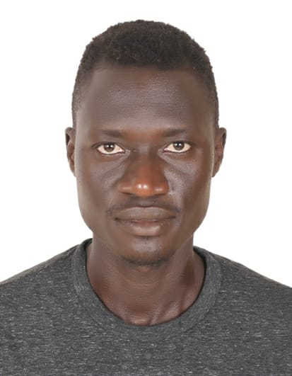
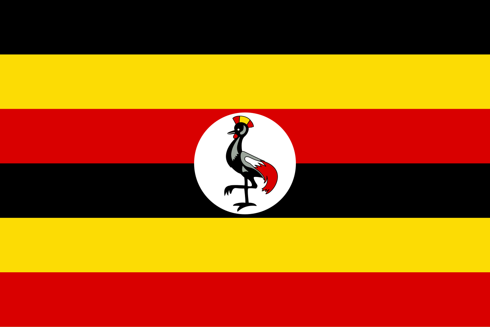

About me
Am Malcom Engwedu from Uganda, a member of the church of Jesus Christ of latter-day Saints from Mengo ward Kampala southstake.Am returned missionary I served in Ghana Accra West Mission, am also a software development student at BYU-Idaho University:
Kampala, Uganda
Uganda, officially known as the Republic of Uganda, is a landlocked country in East Africa. It is bordered by Kenya to the east, South Sudan to the north, the Democratic Republic of the Congo to the west, Rwanda to the southwest, and Tanzania to the south1. The country is known for its diverse landscapes that include the snow-capped Rwenzori Mountains and immense Lake Victoria. Uganda’s capital and largest city is Kampala, which is a vibrant hub of culture and commerce2. The nation is home to a rich tapestry of ethnic groups, with English and Swahili serving as official languages3: